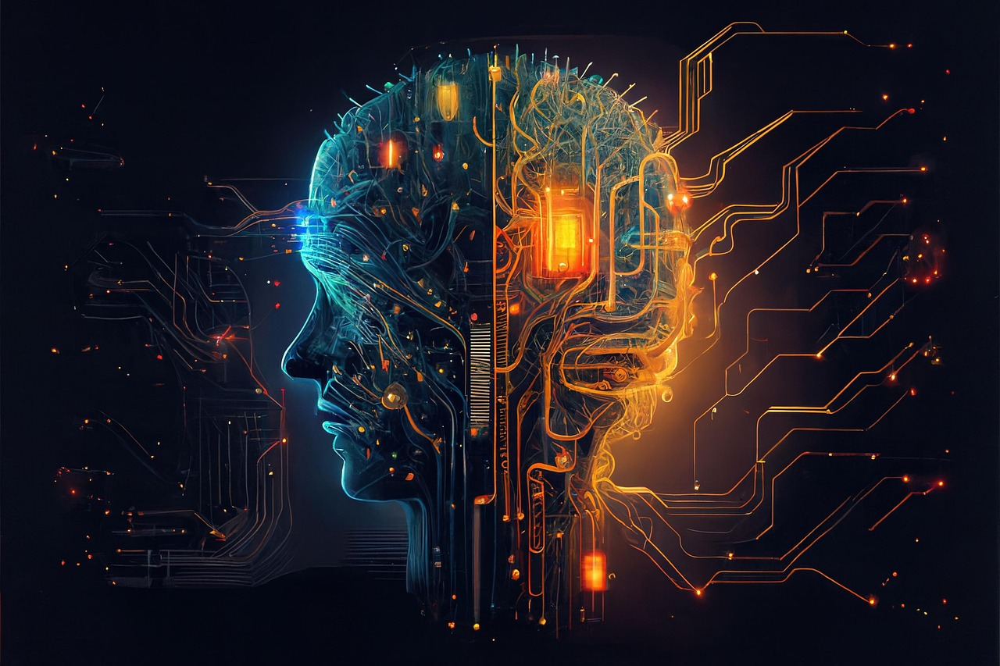

Establishing clear and time-sensitive goals are and will continue to be an important mindset I incorporate into my life and career. The IT environment is constantly expanding and evolving, and a continued education of these systems will make a significant difference in my growth. Listed below, starting with highest priority, are my goals that I believe will advance my career in Cybersecurity and cloud infrastructure.
Security+ is the industry-recognized baseline certification for cybersecurity professionals and is often required for government
and DoD-adjacent roles. I have been studying the domains through my coursework at APSU and a dedicated 10-week study plan.
Passing this exam will validate my knowledge of threats, attacks, cryptography, network security, and identity management.
Start date: July 1, 2026 • Target completion: September 30, 2026
Cloud infrastructure is now central to nearly every enterprise environment and AWS is one of the clear pioneers
in this field. I am studying EC2, S3, RDS, ELB, Auto Scaling, and VPC, and working toward earning the AWS Cloud
Practitioner certification first.
Start date: August 1, 2026 • Target completion: January 31, 2027
AI is increasingly embedded in IT and cybersecurity tooling, from automated threat detection to AI-assisted network
monitoring. While there is growing skepticism arount the technology, I believe it will continue to grow and become as
important as the calculator for many. A foundational understanding of this technology will aid me in business environments
that wish to leverage this tool.
Start date: October 1, 2026 • Target completion: March 31, 2027